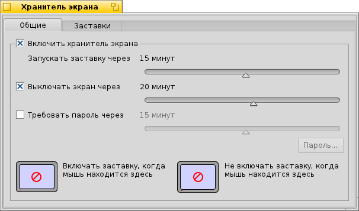
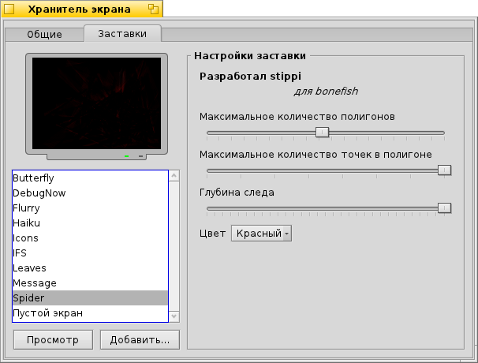

Хранитель экрана (ScreenSaver)
Хранитель экрана (ScreenSaver)
| Расположение в Deskbar: | ||
| Расположение в Tracker: | /boot/system/preferences/Screensaver | |
| Настройки хранятся по адресу: | ~/config/settings/ScreenSaver_settings |
Окно настроек хранителя экрана разбито на две вкладки:
 General
General

Флажок сверху включает/выключает хранитель экрана.
После его активации внизу станет доступен ползунок, с помощью которого выбирается время, через которое хранитель экрана включится при отсутствии активности с мыши и клавиатуры.
Следующие два ползунка активируются соответствующими флажками возле них:
Первый ползунок определяет время, после которого монитор отключится.
Второй ползунок определяет время, после которого активируется пароль для разблокировки вашего компьютера.
Кликая мышкой в различные углы двух экранов снизу, вы определяете когда запустить хранитель экрана или же наоборот, воспрепятствовать его включению, переместив мышку в указанный угол. Кликните по центру любого экрана для отключения этой функции.
Хранители экрана (Screensavers)

Во второй вкладке находится список всех установленных хранителей экрана и их собственные настройки. Вы можете протестировать любой из них с изменёнными настройками, нажав кнопку внизу.
Новые хранители экрана, если они не поставляются в виде обычных пакетов .hpkg, можно установить, скопировав в соответствующую папку non-packaged (см. подробнее в теме Иерархия файловой системы).
| /boot/system/non-packaged/add-ons/Screen Savers/ | для хранителей экрана, доступных любому пользователю. | |
| /boot/home/config/non-packaged/add-ons/Screen Savers/ | для хранителей экрана, доступных только вам. |